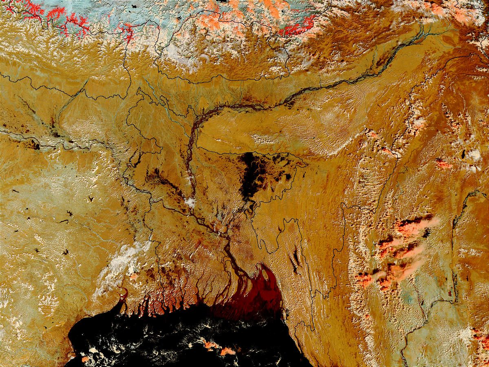

배출은 0.02퍼센트, 피해는 전면적… 재해 앞의 기후 형평 논쟁
네팔의 대규모 홍수 피해를 계기로, 온실가스 배출 기여도가 극히 낮은 나라가 기후 재해의 피해를 집중적으로 겪는 구조에 대한 문제 제기가 이어지고 있다.
손승종 기자 · 2026.09.03
橋사회

네팔 인사의 발언을 인용한 보도에서, 네팔의 온실가스 배출이 전 세계의 0.02퍼센트에 불과함에도 재해 피해는 전면적이라는 지적이 제기됐다.
광고 문의 · 300×250이 발언은 최근의 대규모 홍수 피해를 배경으로 나왔다. 배출 책임과 피해 부담의 불일치가 논점이다.
배출과 피해의 비대칭
온실가스 배출량은 소수 국가에 집중돼 있다. 반면 극한 기상으로 인한 인명·재산 피해는 대응 역량이 부족한 지역에서 크게 나타나는 경향이 있다.
산악 지형과 빙하호를 낀 지역은 강수 패턴의 변화에 특히 민감하다. 지형 자체가 피해를 증폭시키는 조건이 된다.
국제 논의의 경과
기후 협상에서 이 문제는 손실과 피해라는 항목으로 다뤄져 왔다. 기금 조성과 배분 기준을 둘러싼 논의가 이어져 왔지만, 실제 집행 규모는 필요액에 미치지 못한다는 지적이 반복된다.
적응 재원과 조기경보 체계 구축이 우선 과제로 거론된다. 예보와 대피 체계는 피해 규모를 좌우하는 직접적 변수다.
논쟁의 두 축
한쪽에서는 역사적 배출 책임에 따른 재원 부담을 강조한다. 다른 쪽에서는 현재의 배출 구조와 개발 필요를 함께 고려해야 한다고 본다.
본지는 이 논쟁에서 특정 입장을 지지하지 않는다. 다만 배출 통계와 피해 통계를 나란히 놓고 보는 것이 논의의 출발점이라고 본다.
실무적 관심사
재해 피해 지역과 연결된 이주노동자 송금은 재건 재원의 중요한 부분을 차지한다. 한국에도 네팔 출신 이주노동자가 다수 체류하고 있다.
송금 경로와 수수료, 재해 시 긴급 송금 절차는 이런 국면에서 실무적으로 중요한 정보가 된다.
출처·참고 (사실 확인용 — 본문은 직접 재작성)
· 조선일보 2026-08-31
· 경향신문 2026-08-30
· 조선일보 2026-08-31
· 경향신문 2026-08-30